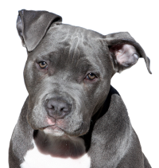
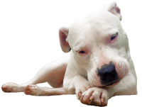

TRABALHANDO COM LISTAS
Listas Ordenadas
- Acordar
- Estudar
- Pegar o cachorro
- Tomar café
- Escovar os dentes
- Tomar banho
- Aula online
- Limpar a casa
- Almoçar
- Descansar
- Comer um lanche
- Assistir o curso em vídeo
Listas não Ordenadas
- Pão
- Manteiga
- Açai
- Farinha
- Frango
- Carne
- Feijão
- Arroz
Minhas linguagens favoritas
- Antigas
- Clipper
- Visual Basic
- Fortran
- Drlphi
- Novas
- PHP
- Python
- JavaScript
- Kotlin
Meus jogos favoritos
- NES
- Mario Bros
- Mario Bros 3
- Mario: Lost Levels
- Ninja Gaiden
- SNES
- PlayStation2
- gta
- Need for Speed
- Hot Pursuit 2
- Underground 2
- Resident evil
- Resident evil 2
- Resident evil 4
- Dragon ball budokai tenkaichi
- Dragon ball budokai tenkaichi 2
- Dragon ball budokai tenkaichi 3
Lista de Definições
- HTML:
- Línguagem de marcação para a criação do conteúdo de um site.
- CSS:
- Línguagem de marcação para a criação do desing de um site.
- JavaScript
- Línguagem de programação para a interatividade de um site.
HS
Imagens de Cães
Fotos abaixo:

PitBull
Expectativa de Vida: 8 – 15 anos
Grupo: CBKC - Grupo 11; UKC - Grupo dos Terriers
Personalidade: Inteligente, Afetuoso, Amigável, Teimoso, Leal, Desajeitado, Obediente, Determinado, Gentil, Corajoso
Altura: Macho: 45 – 53 cm, Fêmea: 43 – 50 cm
Origem: Estados Unidos, Reino Unido
Peso: Macho: 16 – 30 kg (Adulto), Fêmea: 14 – 27 kg (Adulto)
Cores: Preto, Branco, Tigrado, Fulvo, Tan, Cinzento, Azul, Marrom, Vermelho

Dogo Argentino
Expectativa de vida: de 10 a 15 anos
Cor: Branco
Origem: Argentina
Altura da fêmea: 60-65 cm na cernelha
Altura: Fêmea: 60–65 cm, Macho: 60–68 cm
Personalidade: Afetuoso, Amigável, Leal, Alegre, Protetor, Tolerante
Peso: Fêmea: 35–40 kg, Macho: 40–45 kg
Vira Lata
18 anos
Se você já se perguntou quando anos vive um cachorro vira-lata,
fique sabendo que essa é uma raça que tem uma ótima expectativa de vida,
que varia entre 16 e 18 anos.